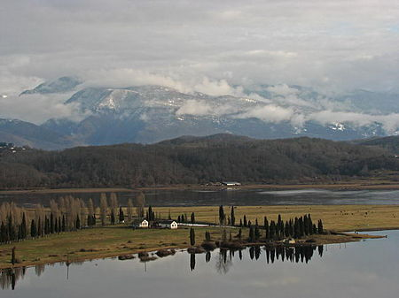
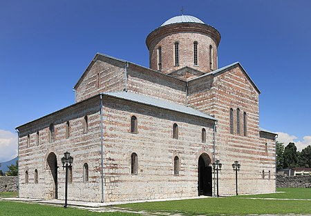

get to know georgia
ბიჭვინთა[3][4] (აფხ. Пицунда[5] [პიცუნდა]) — დაბა საქართველოში, გაგრის მუნიციპალიტეტის ტერიტორიაზე, აფხაზეთში. მდებარეობს შავი ზღვის სანაპიროზე, მდინარე ბზიფის მარცხენა ნაპირზე, იმავე სახელწოდების კონცხზე, ქალაქ გაგრის სამხრეთით 22 კმ-ზე, სოხუმიდან 80 კმ. 2008 წლის 23 ოქტომბრის ოკუპირებული ტერიტორიების შესახებ საქართველოს კანონის საფუძველზე, ტერიტორია ოკუპირებულია რუსეთის ფედერაციის სამხედრო აგრესიის შედეგად და დადგენილია ამ ტერიტორიების განსაკუთრებული სამართლებრივი რეჟიმი.

ბიჭვინთის როგორც ქართული და აფხაზური, ისე ძველი ბერძნული სახელი პიტიუნტი (Πιτυοῦς), ფიჭვიდან (ლათ. Pitios) მომდინარეობს. ბიჭვინთის კონცხზე ახლაც არის რელიქტური ფიჭვის კორომები.
ავა — ზღვის, ნოტიო, რბილი. იცის თბილი ზამთარი და ზომიერად ცხელი ზაფხული. საშუალო წლიური ტემპერატურა 14,6 °C, იანვარი 6,2 °C, აგვისტო 24 °C. ნალექები 1501 მმ. წელიწადში, მაქსიმუმი — იანვარში (160 მმ). ზღვის წყლის ტემპერატურა ზედაპირზე მაისიდან ნოემბრამდე 20 °C-ზე მაღალია. ფარდობითი ტენიანობა ივლის-აგვისტოთვის 80 %, მზის ნათების ხანგრძლივობა 1800 სთ წელიწადში. ყველაზე მშრალი პერიოდია გაზაფხული. იშვიათია ძლიერი ქარი და ზღვის ღელვა. სანაპიროს 7 კმ-ზე გასდევს ბიჭვინთის სახელმწიფო ნაკრძალის რელიქტური ფიჭვის ტყის მასივი.
ბიჭვინთა ზღვისპირა კლიმატური კურორტია. აქვს საუკეთესო ქვიშიანი პლაჟი. სამედიცინო ჩვენებები: სუნთქვის ორგანოთა, გულ-სისხლძარღვთა და ნერვული სისტემების ფუნქციური დავადებები. სეზონი — მთელი წელი.
ბიჭვინთის კონცხზე აღმოჩენილი ბრინჯაოს ცულების განძი და საქართველოს შავიზღვისპირეთის დიუნების ძველ კოლხურ ნამოსახლართათვის დამახასიათებელი ე. წ. ქსოვილიანი კერამიკა ადასტურებს, რომ ძვ. წ. II ათასწლეულის II ნახევრისა და I ათასწლეულის პირველ საუკუნეებში ბიჭვინთის კონცხზე არსებული კოლხური დასახლებანი. ბიჭვინთა პირველად მოხსენიებულია სტრაბონის „გეოგრაფიაში“, როგორც „დიდი პიტიუნი“. სტრაბონი ემყარებოდა ძვ. წ. II საუკუნის ბერძენი გეოგრაფის არტემიდორე ეფესელის ცნობას. ირკვევა, რომ ქალაქი აქ უკვე ელინისტურ ხანაში არსებობდა, თუმცა იმდროინდელი კულტურის ფენები ჯერჯერობით მიკვლეული არ არის.
ბიჭვინთის არქეოლოგიური გათხრები მიმდინარეობდა 1952 წლიდან (ა. აფაქიძე — 1952-1974 ხელმძღვანელი, 1975 წლიდან — კონსულტანტი; გ. ლორთქიფანიძე — 1975 წლიდან ხელმძღვანელი). მრავალრიცხოვანი არქეოლოგიური მონაპივარი (წითელლაკიანი კერამიკა, ნუმიზმატიკური მასალა. ბერძნულ-ლათინური წარწერათა ფრაგმენტები და სხვა) გვიჩვენებს, რომ ბიჭვინთა მძლავრი კულტურისა და სავაჭრო სახელოსნო ცენტრი გვიანდელ ანტიკურ ხანაში. გამოვლინდა II-IV საუკუნეების ციხე, რომლის კედლები, კონტრფორსებითა და კოშკებით არის გამაგრებული. გალავნის შიგნით განლაგებული ყოფილა ნაგებობათა მთელი სისტემა — საცხოვრებელი სახლები, სასიმაგრო, საკულტო და სამეურნეო დანიშნულების ნაგებობანი (აბანო, მარანი, კერამიკული ქურა, საოქრომჭედლო სახელოსნო და სხვა).
ბიჭვინთაში არსებული საკანალიზაციო სისტემა მიგვითითებს გვიანდელი ანტიკური ხანის საქალაქო-სანიტარული კულტურის მაღალ დონეზე, ნაქალაქარის გარეთ, ასევე გალავნით შემოზღუდულ ტერიტორიაზე, აღმოჩენილია ქრისტიანული ტაძრის — სამნავიანი ბაზილიკის ნანგრევები, რომელსაც შვერილი ხუთწახნაგოვანი აფსიდი ჰქონია. შუა ფართო ნავი გვერდის ნავებისაგან ხუთი წყვილი ბურჯით იყო გამოყოფილი. დასავლეთის მხრიდან ტაძარს ნართექსი ეკვროდა, რომელიც ნავებს 3 შესასვლელით უკავშირდებოდა. ტაძარი V საუკუნეს მიეკუთვნებოდა. იგი აუგუათ, როგორც ჩანს, უფრო ძველი, IV საუკუნის ბაზილიკის ნანგრევებზე, რომელიც რამდენადმე უფრო დიდი ზომისაც ყოფილა და უფრო მდიდრულად მორთულიც. ამას მოწმობს მარმარილოს არქიტექტურული ფრაგმენტები და მოზაიკით შემკული იატაკი.
ძველი ტაძრის დასავლეთით აღმოჩნდა კიდევ ერთი, უფრო მცირე ზომის ტაძრის ნანგრევები; ტაძარი, როგორც ჩანს, VI-VII საუკუნეებში აუგიათ. ბიჭვინთის ცენტრში, ნაქალაქარიდან 300 მ-ზე, ჯვარულ-გუმბათოვანი დიდი ტაძარი დგას (X საუკუნის ბოლო — XI საუკუნის დასაწყისი), რომელსაც აღმოსავლეთით სამი შვერილი აფსიდი აქვს, დასავლეთით ნართექსი. ფართო მრგვალი გუმბათი თავისუფლად მდგარ ორ ბურჯსა და საკურთხეველის აფსიდის კედლის შვერილებს ეყრდნობა. XIX საუკუნის 60-იან წლებში ტაძრის კედლები შეულესავთ და შეუთეთრებიათ, შემორჩენილია XVI საუკუნის კედლის მხატვრობის ფრაგმენტები. ტაძრის ტერიტორიაზე შემონახულია პატარა სამლოცველოები და ეკლესიები. ტყეში, ზღვის პირას, გათხრილია ორაფსიდიანი ტაძრის ნანგრევები (VI საუკუნე).
II-III საუკუნეებიდან ბიჭვინთის ციხეში იდგა რომაელთა გარნიზონი, რომელიც რომის იმპერიის ჩრდილოეთ-აღმოსავლეთ მისადგომებს იცავდა მთიელთა შემოსევებისაგან. ბიჭვინთა ქრისტიანობის ერთ-ერთი უძველესი და ძლიერი ცენტრი იყო. IV საუკუნის I მეოთხედში აქ საეპისკოპოსო კათედრა ყოფილა. ბიჭვინთის ეპისკოპოსი სტრატოფილე 325 წელს ნიკეის I მსოფლიო საეკლესიო კრების მონაწილე იყო. ბიჭვინთა დიდ საეკლესიო ცენტრად დარჩა შუა საუკუნეებშიც. აფხაზეთის სამეფოს შექმნის შემდეგ ბიჭვინთაში იჯდა აფხაზეთის კათოლიკოსი, ხოლო საქართველოს ერთიანი სამეფოს დაშლის შემდეგ (XV-XVI სს.) — აფხაზეთის კათოლიკოს-პატრიარქი.
საბჭოთა პერიოდში ბიჭვინთა წარმოადგენდა საკავშირო პოლიტიკური ელიტის დასასვენებელ ადგილს. 1963 წელს მიენიჭა დაბის სტატუსი. 1959-1967 წლებში აშენდა მსხვილი საკურორტო კომპლექსი (არქიტექტორი მ. პოსოხინი და სხვები). ბიჭვინთის პანსიონატები გათვლილი იყო 3 ათას დამსვენებელზე. 1974 წელს ბიჭვინთაში გაიმართა შეხვედრა საფრანგეთის პრეზიდენტ ჟორჟ პომპიდუსა და სსრკ–ის გენერალურ მდივანს ლეონიდ ბრეჟნევს შორის.[6] საბჭოთა პერიოდში მოქმედებდა მეფრინველეობის ფერმა და თევზის ქარხანა.